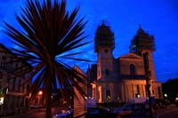

Information about Athlone
Athlone is a friendly lively town buzzing with atmosphere and is located in the centre of Ireland. It is an ideal destination for a visitor holiday base.
The town offers a choice of excellent hotels, quality B&B's and self-catering accommodation, with a variety of restaurants and cafes catering for all tastes and budgets.
There is an abundance of tourist attractions and historical sites to visit including Athlone Castle, Clonmacnoise Monastic Site, Derryglad Folk Museum, Moydrum Castle, Dun na Si Heritage, Locke's Distillery Museum and lots more. Bus tours are available to these attractions all year round.
The River Shannon flows through Athlone making it a popular destination for water and leisure enthusiasts. Guided boat-trips of Lough Ree and the River Shannon operate from Athlone during the visitor season.
Activities are plentiful and there is lots to choose from whether you are a sporting or cultural enthusiast or just taking a break with your family or friends.
Ballinahown is an award-winning village located on the Westmeath and Offaly border close to Athlone. It is a picturesque village and the perfect place to discover the secret gems of Irish craft, design and culture.
